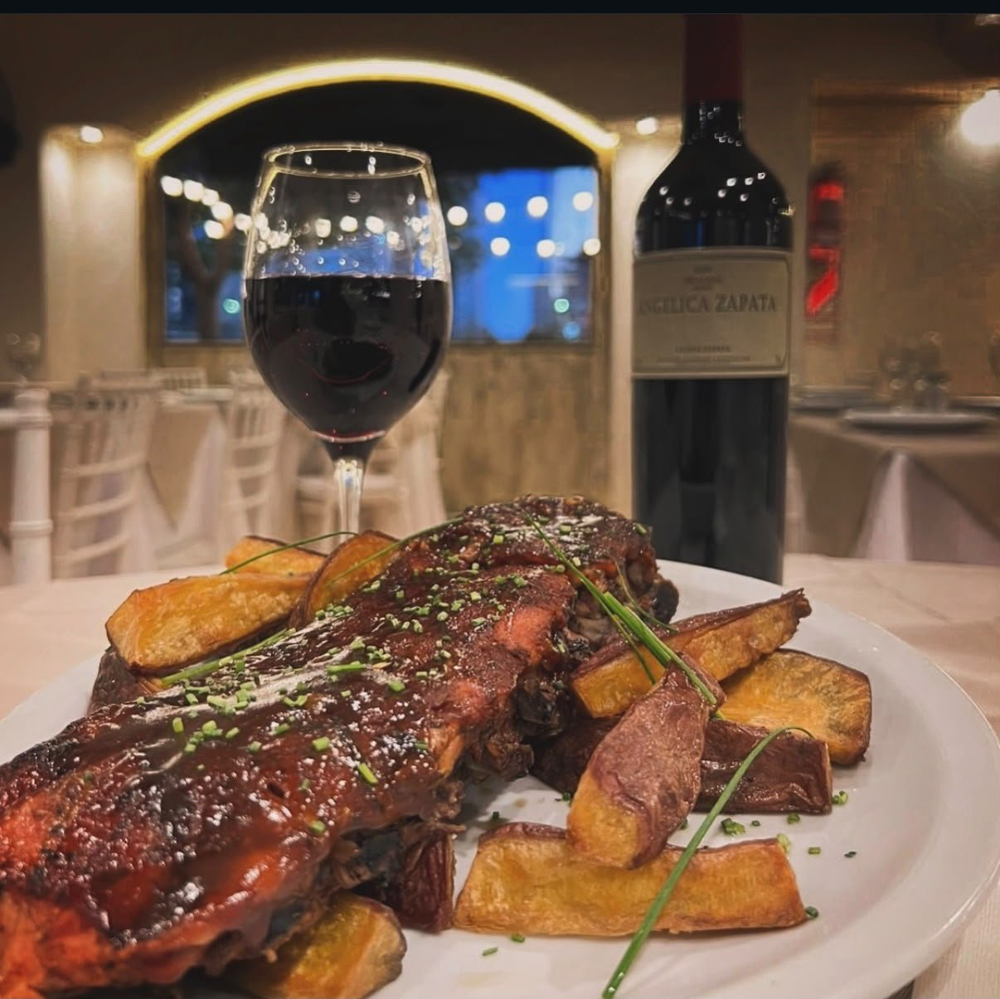

De la carnicería a la parrilla
Varias generaciones de carniceros nos enseñaron a elegir cada corte antes de llevarlo al fuego.
Desde 2010
Una parrilla clásica, frente al río.

Fredy abrió sus puertas en 2010 sobre la costanera de Puerto Madero. Detrás hay algo más antiguo: una cadena de carnicerías familiar con varias generaciones en el oficio.
Esa historia sigue en cada plato. Conocemos la carne desde el origen y hoy también exportamos nuestra propia carne premium.
Varias generaciones de carniceros nos enseñaron a elegir cada corte antes de llevarlo al fuego.
Exportamos nuestra propia carne premium, y la misma exigencia llega a tu mesa.
Una parrilla sencilla y familiar, con los docks de Puerto Madero de fondo.
Si querés probar la verdadera carne argentina, tenés que pasar por Fredy.Ver la carta